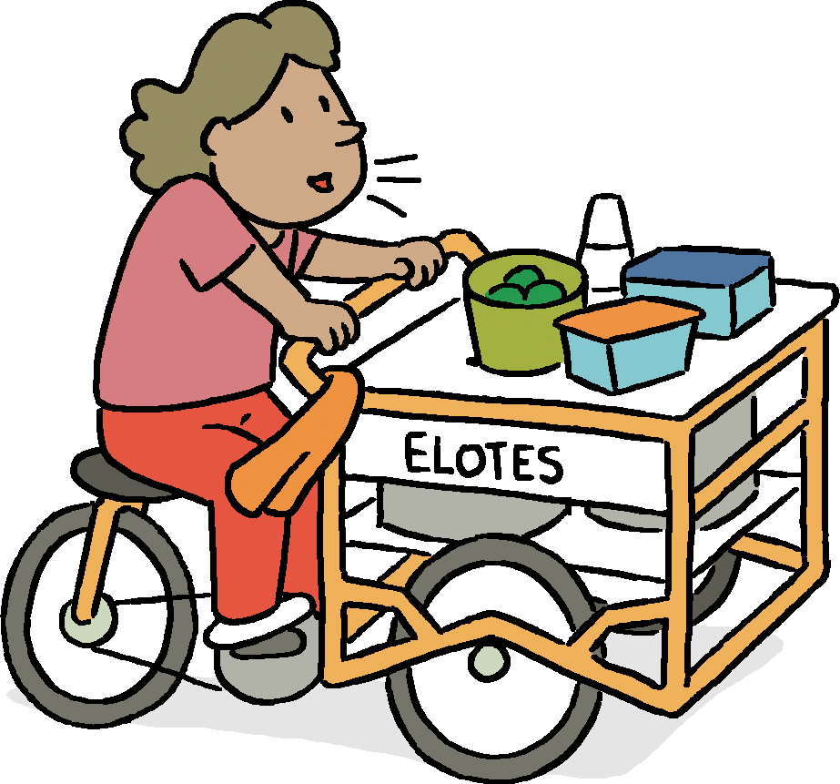
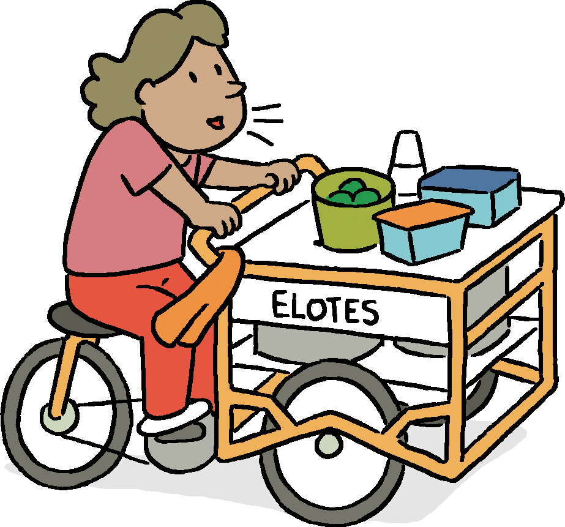

Hola y bienvenido.
This is an audio/visual story exploring the sounds of Mexico City’s streets.
To begin, please connect headphones and choose a language.

The Sounds of CDMX
How informal street vendors define the sonic landscape of Mexico’s capital
Read on to learn about the relationship between the city & its street vendors,
or to explore the sounds of the city on your own.
A Part of Daily Life
With records of their presence dating back to the days of the Aztecs, mobile vendors have long been a part of life and commerce in the city. Especially as CDMX began to sprawl more widely in the mid-1900s, entrepreneurial vendors found increased opportunities to reach customers by cart, truck, bike, and foot.
Today, an estimated 800,000 “vendedores ambulantes” (roughly translated as wandering merchants or peddlers) currently make their living on the streets and sidewalks of Mexico City, and have come to occupy an important place in the economic system and culture of the city. This integral status, however, is threatened by changes in the global supply chain, shifting consumer habits, and the rise of app-enabled shopping and delivery services. While their collective future remains uncertain, for many city dwellers, these mobile merchants remain a vital part of daily life.


A Largely Informal Economy
Despite the large number of itinerant merchants in CDMX, the legality of their work is unclear. Many of them operate informally (without express legal permission or protection) — a phenomenon common anywhere that people face inhospitable economic and legal conditions.
There has long been conversation about regulating them — an effort that could bring more tax revenue to the city as well as more control over traffic flow and food safety. But city officials have opted instead for a kind of management through legal ambiguity, an approach that allows the government to crack down on these merchants or let them be, depending on what is politically expedient.
Operating in a legal gray area does mean that workers can often avoid paying taxes, rent on a space, or licensure fees. But there are a host of other important financial realities to consider. For example, Jony Albino, who works as an organ grinder with his wife and his sister, does not own his instrument. The family rents the organ for 200 pesos (~$10 USD) a day — roughly the price of a sit down meal for the three of them. On a good day they can earn more than double that. Other days they may only cover the cost of the rental.
The informal economy can also leave workers vulnerable to harassment, fines, and extortion. Enforcement of regulations (or the ability to operate at all) is often decided by the caprices of individuals at a given moment: a police officer who can apply statutes more or less indiscriminately, a competing vendor who feels that their territory is being encroached upon, or a government functionary with their own agenda.
This wide range of experiences — from the struggles to the successes — can all be heard on the streets of CDMX.

 



null
Explore On Your Own
Click a merchant to isolate the sound they use to bring customers out onto the street.
Click & drag to pan and pinch to zoom.
Use the menu bar to exit.
Special thanks to:
Editing by Rob Smith
Irene Farah, PhD candidate at UC Berkeley Department of Regional and City Planning.
Madeleine Wattenbarger, freelance journalist.
Alejandra Arevalo, sensitivity reader.
Mario Barbosa, professor and researcher at Universidad Autónoma Metropolitana, Unidad Cuajimalpa.
Carlos Alba Vega, professor investigator and coordinator of the Permanent Seminar on Work and Inequality at El Colegio de México.
And an enormous thank you to all the workers and merchants who shared their experiences and their sounds with us.